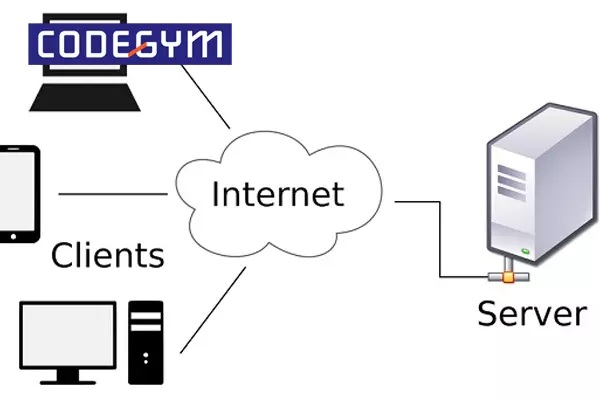

LẬP TRÌNH MẠNG
Môn học nền tảng giúp xây dựng các hệ thống giao tiếp qua mạng
🌐 Client – Server
Hiểu mô hình giao tiếp phổ biến nhất trong lập trình mạng.
💬 Socket & Chat
Thực hành Java Socket, xây dựng ứng dụng Chat Client–Server.
⚡ Web & Realtime
HTTP, Fetch API, WebSocket và giao tiếp thời gian thực.
📘 Tổng quan môn học#
Lập trình mạng giúp sinh viên hiểu cách các chương trình
giao tiếp với nhau thông qua mạng máy tính, từ ứng dụng nhỏ
đến các hệ thống phân tán lớn.
🎯 Nội dung đã thực hành#
✔ Java Socket (TCP / UDP)
✔ Mô hình Client – Server
✔ Ứng dụng Chat Client – Server
✔ Java RMI
✔ HTTP & REST
✔ Fetch API
✔ WebSocket
✔ Hugo + GitHub Pages
📂 DANH SÁCH BÀI HỌC#
1. Java Socket là gì? Socket cho phép hai chương trình giao tiếp qua mạng bằng IP và Port.
2. Mô hình hoạt động Client → Server → Trả dữ liệu
3. Code Server (chạy được) import java.net.ServerSocket; import java.net.Socket; import java.io.DataInputStream; public class Server { public static void main(String[] args) throws Exception { ServerSocket server = new ServerSocket(1234); System.out.println("Server đang chạy..."); Socket socket = server.accept(); DataInputStream in = new DataInputStream(socket.getInputStream()); System.out.println("Client gửi: " + in.readUTF()); server.close(); } }
1. Khái niệm Mô hình Client – Server là kiến trúc phổ biến trong lập trình mạng.
Client gửi yêu cầu, Server tiếp nhận và xử lý.
2. Ưu điểm Quản lý dữ liệu tập trung Dễ bảo trì Dễ mở rộng hệ thống 3. Nhược điểm Phụ thuộc vào Server Server quá tải sẽ ảnh hưởng toàn hệ thống 4. Ứng dụng thực tế Mô hình Client – Server được sử dụng trong:
...
TCP Tin cậy Dùng Socket UDP Nhanh Dùng DatagramSocket DatagramSocket socket = new DatagramSocket();
1. Java RMI là gì? RMI (Remote Method Invocation) là cơ chế cho phép một chương trình Java gọi phương thức của đối tượng đang chạy trên một máy khác trong mạng.
2. Nguyên lý hoạt động Client gọi phương thức từ xa Server thực thi phương thức Kết quả được trả về qua mạng 3. Interface từ xa trong RMI import java.rmi.Remote; import java.rmi.RemoteException; public interface Hello extends Remote { String sayHello() throws RemoteException; }
1. Mô tả bài toán Ứng dụng Chat Client – Server cho phép các máy tính trong mạng trao đổi tin nhắn với nhau thông qua giao thức TCP Socket.
2. Nguyên lý hoạt động Server mở cổng và chờ kết nối Client kết nối đến Server Client gửi tin nhắn Server nhận và hiển thị tin nhắn 3. Ý nghĩa trong lập trình mạng Bài toán Chat giúp sinh viên hiểu rõ:
...
JavaScript trong Web Giao tiếp server thông qua HTTP và WebSocket.
1. Fetch API là gì? Fetch API là công cụ trong JavaScript dùng để gửi các yêu cầu HTTP từ trình duyệt đến Server và nhận dữ liệu phản hồi.
Trong lập trình mạng Web, Fetch API đóng vai trò là cầu nối giữa Client (trình duyệt) và Server.
2. Ví dụ sử dụng Fetch API fetch("https://jsonplaceholder.typicode.com/posts/1") .then(response => response.json()) .then(data => { console.log(data); }) .catch(error => { console.error("Lỗi:", error); });
1. WebSocket là gì? WebSocket là giao thức cho phép thiết lập kết nối hai chiều giữa Client và Server thông qua một kết nối TCP duy nhất.
2. Đặc điểm của WebSocket Kết nối hai chiều (full-duplex) Phù hợp cho ứng dụng thời gian thực Giảm độ trễ so với HTTP truyền thống 3. Ví dụ WebSocket Client (JavaScript) const ws = new WebSocket("ws://localhost:8080"); ws.onopen = () => { console.log("Đã kết nối tới WebSocket Server"); }; ws.onmessage = (event) => { console.log("Server gửi:", event.data); }; ws.onclose = () => { console.log("Kết nối đã đóng"); };
1. Nội dung đã học Trong môn Lập trình mạng, em đã được tiếp cận các kiến thức nền tảng về cách các chương trình giao tiếp với nhau thông qua mạng máy tính.
Các nội dung chính bao gồm:
Lập trình Socket với Java Giao thức TCP và UDP Mô hình Client – Server Java RMI và hệ thống phân tán Giao tiếp mạng trong Web 2. Ý nghĩa của môn học Môn học giúp em hiểu rõ nguyên lý hoạt động của các hệ thống mạng hiện đại, từ các ứng dụng nhỏ như Chat cho đến các hệ thống lớn như Web và dịch vụ phân tán.
...